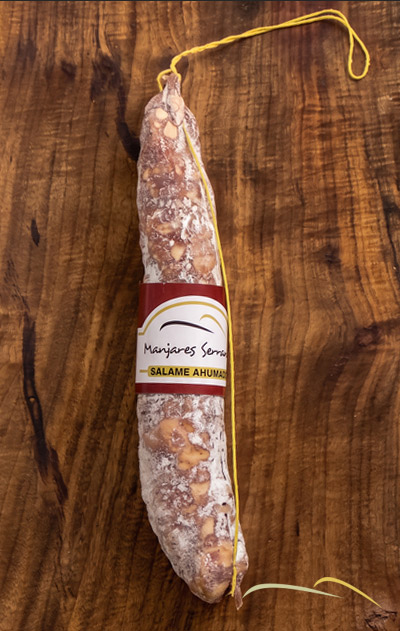
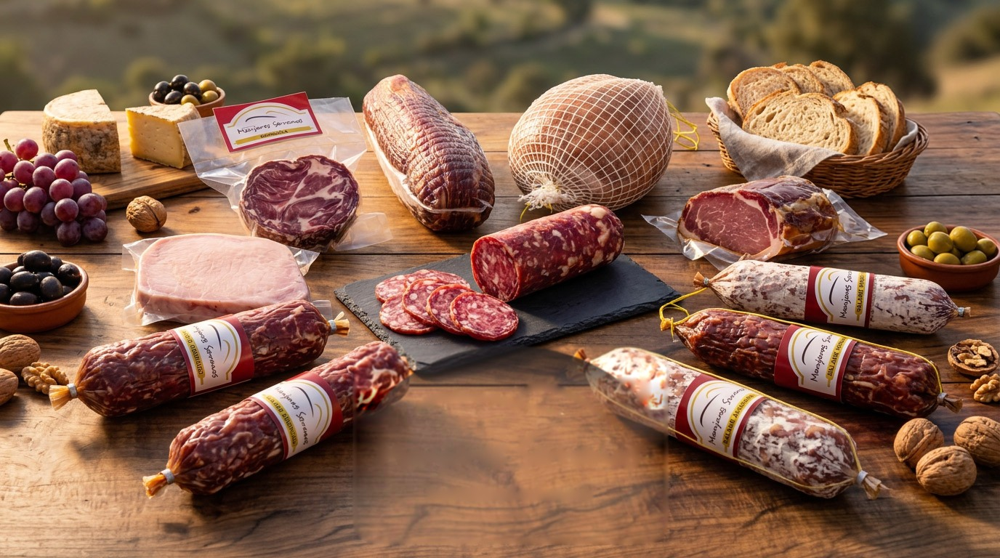
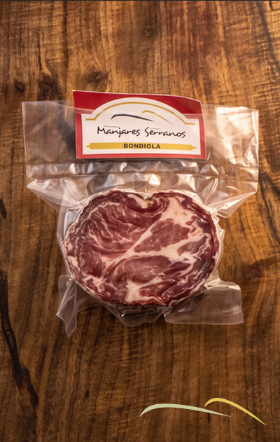
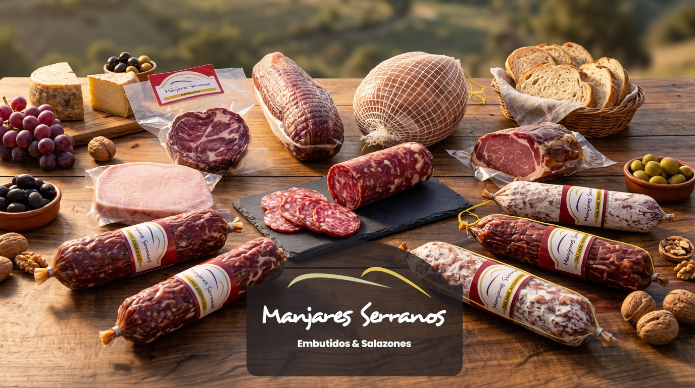

Salame ahumado premium
Tripa natural, ahumado
Tira de 2 unidades de 250 gr c/u en tripa natural. Ahumado natural con madera de nogal.
Consultar

Tripa natural, ahumado
Tira de 2 unidades de 250 gr c/u en tripa natural. Ahumado natural con madera de nogal.
Consultar
Embutidos, tripa natural
Tira de 2 unidades de 250 gr c/u. Elaborado con tripa natural para un sabor auténtico.
Consultar
Fraccionada, al vacío
Fraccionada, envasada al vacío en porciones de aprox. 250 gr, lista para tu mesa.
ConsultarUna pieza de cada línea, de los embutidos a las salazones.

Tripa sintética
Tira de 2 unidades de 330 gr c/u. Curado seco tradicional en tripa sintética.
Consultar
Al vacío, 4 variedades
Unidad de aprox. 300 gr al vacío: ají molido, pimienta, romero o tomillo.
Consultar
Pieza entera
Pieza entera de aprox. 1 kg. Textura firme y sabor intenso, ideal para picadas.
Consultar
Pieza entera
Pieza entera en red de aprox. 1 kg. El sabor inconfundible del jamón crudo de las sierras. También disponible fraccionado al vacío.
Consultar
Sierras de CórdobaManjares Serranos es una empresa familiar de José de la Quintana, Córdoba. Desde hace más de dos décadas elaboramos embutidos y salazones con una regla simple: cada lote debe salir igual de bien que el anterior.
Trabajamos con carne porcina seleccionada, curada lentamente por el aire seco de la sierra, en un establecimiento habilitado y con trazabilidad completa desde el corte hasta tu mesa.
Comprás directo al productor: retirás en planta o te lo entregamos en Córdoba capital.
Contacto
Escribinos por WhatsApp y te asesoramos sobre piezas, cantidades y conservación. Coordinamos la entrega en Córdoba capital o el retiro en planta.
Escribir por WhatsApp